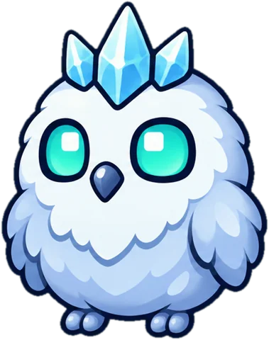

 Psychic
PsychicTap a stage to read its story.
Frostpip is a tiny round white owlet with a small cluster of blue ice-crystal tufts atop its head like a crown it didn't ask for, and large turquoise eyes that glow faintly in the dark. It perches on the frost-cracked rock shelves of Frozen Peaks, staring into the meltpool below with enormous seriousness. Every few minutes it blinks slowly and the water beneath it briefly freezes into a perfect disc that thaws almost immediately, leaving the local fish thoroughly confused.
Field note: Frostpip blinks once every 47 seconds exactly; researchers have used it to synchronize field watches.
Coral Bay. Frostpip and its family are found in the Coral Bay. See everyone who lives there.
Share a Bond Food that matches its types to become friends. Frostpip loves:
A Bond Food is not a trick. It joins your spirit with the Kimuro's spirit, and only when it chooses you.
Print the Kimuro adventure packs: mazes, cards, a board game and Bond Mark medals.
See the printable packs